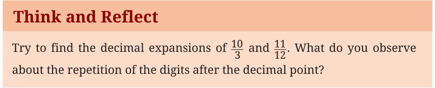
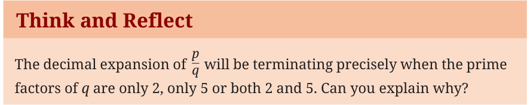

When we unite the dense web of Rational Numbers with the unfillable gaps of Irrational Numbers, we create the unbroken, continuous line of the Real Numbers (\(\mathbb{R}\)). The easiest way to distinguish a rational number from an irrational number is to look at its decimal expansion.
3.6.1 Rational Decimals: Terminating and Repeating
If you divide the numerator of a rational number by its denominator, exactly one of two things will happen:
- It terminates: The division eventually leaves a remainder of 0. The decimal stops.
Example 2: \(\frac{3}{8} = 0.375\). (Can you tell for which rational numbers the decimal will be terminating?)
- It repeats: The division never reaches a remainder of 0, but the sequence of digits begins to loop infinitely.
Example 3: \(\frac{5}{11} = 0.454545\ldots = 0.\overline{45}\).
Think and Reflect
Try to find the decimal expansions of \(\frac{10}{3}\) and \(\frac{11}{12}\). What do you observe about the repetition of the digits after the decimal point?

Why do some rational numbers have repeating decimal representations? Imagine calculating \(\frac{1}{7}\) using long division. You are dividing by 7. What are the possible remainders at each step? They can only be 1, 2, 3, 4, 5, or 6 (why not 0?). Because there is a limited number of possible remainders eventually, a remainder must show up a second time. Once a remainder repeats, the entire division process loops, creating a repeating decimal!
Predicting the Type of Decimal Expansion
The interesting thing is that we can predict whether the decimal expansion of a rational number will terminate or go on forever without actually doing the long division process! For this, we resort to finding the prime factors of the denominator.
Let \(\frac{p}{q}\), \(q \ne 0\), be a rational number in its lowest terms (that is, \(p\) and \(q\) have no common factor other than 1).
Consider the fraction \(\frac{3}{20}\). The prime factorisation of 20 is \(2^2 \times 5\).
Hence, \(\frac{3}{20} = \frac{3}{2^2 \times 5} = \frac{3 \times 5}{2^2 \times 5 \times 5} = \frac{15}{100} = 0.15\).
We multiply the numerator and denominator by 5 to get 100 and arrive at 0.15 which is a terminating decimal.
Think and Reflect
The decimal expansion of \(\frac{p}{q}\) will be terminating precisely when the prime factors of \(q\) are only 2, only 5, or both 2 and 5. Can you explain why?

This is because in such cases, we can make the denominator a power of 10 by multiplying both numerator and denominator by a suitable number.
Converting Rational Decimals into the Form \(\frac{p}{q}\)
Case 1: Terminating decimals
We have already seen in earlier grades how to convert terminating decimals into the form \(\frac{p}{q}\).
Example 4: Convert 0.35 into the form \(\frac{p}{q}\).
We know that \(0.35 = \frac{35}{100} = \frac{7}{20}\).
Now, let us understand how to convert non-terminating repeating decimals into the form \(\frac{p}{q}\).
Case 2: Pure repeating decimals
A pure repeating decimal is one in which a digit or a sequence of digits begins repeating immediately after the decimal point.
Example 5: Convert \(0.\overline{6}\) into the form \(\frac{p}{q}\).
Step 1: Let \(x = 0.\overline{6}\).
Step 2: Since one-digit repeats, multiply both sides by \(10^1 = 10\), we get
\[10x = 6.\overline{6}\]Step 3: Subtract the first equation from the second:
\[10x - x = 6.\overline{6} - 0.\overline{6} = 6.\]Step 4: Solve for \(x\): \(9x = 6\). Thus, \(x = \frac{6}{9} = \frac{2}{3}\).
Example 6: Convert \(0.\overline{45}\) into the form \(\frac{p}{q}\). Let \(x = 0.\overline{45}\).
Since two digits repeat, multiply by \(10^2 = 100\). We get \(100x = 45.\overline{45}\). Subtracting the two equations, we get \(99x = 45\).
\[\text{So, } x = \frac{45}{99} = \frac{5}{11}.\]Case 3: General repeating decimals
A general repeating decimal has some non-repeating digits just after the decimal point, followed by a repeating block.
Example 7: Convert \(0.1\overline{6}\) into the form \(\frac{p}{q}\).
Step 1: Let \(x = 0.1\overline{6}\).
Step 2: First, shift the decimal to place the repeating part immediately after the decimal point. Since one digit is non-repeating, we multiply by \(10^1 = 10\) and obtain
\[10x = 1.\overline{6}\]Step 3: Now, to move one full repeating cycle (1 digit repeating), we multiply by \(10^1 = 10\) again and get \(100x = 16.\overline{6}\).
Step 4: Subtracting the first shifted equation from the second, we get,
\[100x - 10x = 16.\overline{6} - 1.\overline{6}, \text{ or } 90x = 15. \text{ Thus, } x = \frac{15}{90} = \frac{1}{6}.\]Example 8: Convert \(2.35\overline{7}\) into the form \(\frac{p}{q}\).
Step 1: Let \(x = 2.35\overline{7}\).
Step 2: Here, '35' is non-repeating (2 digits), '7' repeats (1 digit). Firstly, we multiply by \(10^2 = 100\) to move the non-repeating digits before the decimal and we obtain \(100x = 235.\overline{7}\).
Step 3: Now, we multiply by \(10^1 = 10\) to move the full repeating cycle and get \(1000x = 2357.\overline{7}\).
Step 4: Subtracting, we obtain \(1000x - 100x = 2357.\overline{7} - 235.\overline{7}\). Hence, \(900x = 2122\) and \(x = \frac{2122}{900} = \frac{1061}{450}\).
Example 9: Convert \(2.45\overline{37}\) into the form \(\frac{p}{q}\).
Step 1: Let \(x = 2.45\overline{37}\).
Step 2: Here, '45' is non-repeating (2 digits), '37' repeats (2 digits). Firstly, we multiply by \(10^2 = 100\) to move the non-repeating digits before the decimal and we obtain \(100x = 245.\overline{37}\).
Step 3: Now, we multiply by \(10^2 = 100\) to move the full repeating cycle and get \(10000x = 24537.\overline{37}\).
Step 4: Subtracting, we obtain \(10000x - 100x = 24537.\overline{37} - 245.\overline{37}\). Hence, \(9900x = 24292\) and \(x = \frac{24292}{9900} = \frac{6073}{2475}\).
Summary Table for Conversion
| Decimal type | Steps to follow |
|---|---|
| Pure repeating |
|
| General repeating |
|
3.6.2 The Magic of Cyclic Numbers
When we calculate the decimal for \(\frac{1}{7}\) we get \(0.142857142857\ldots\) or \(0.\overline{142857}\). The repeating block, 142857, is one of mathematics' most fascinating gem — a cyclic number. Watch what happens when we multiply it by the digits 1 through 6:
\[\begin{aligned} 142857 \times 1 &= 142857 \\ 142857 \times 2 &= 285714 \\ 142857 \times 3 &= 428571 \\ 142857 \times 4 &= 571428 \\ 142857 \times 5 &= 714285 \\ 142857 \times 6 &= 857142 \end{aligned}\]The same digits simply shift in a cyclic circle! This beautiful internal structure is a hallmark of the rational number \(\frac{1}{7}\).
3.6.3 Irrational Decimals: Chaos and Infinity
Irrational numbers, however, possess decimal expansions that never end and never repeat. There is no cyclic block, no pattern that loops forever. Examples include:
\[\sqrt{2} = 1.4142135623730950488\ldots\] \[\pi = 3.1415926535897932384\ldots\]